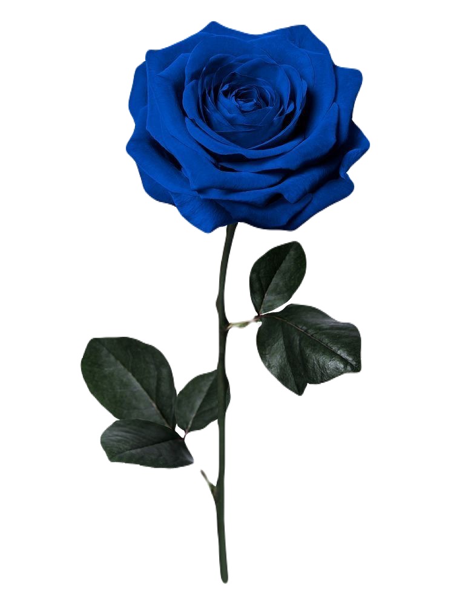
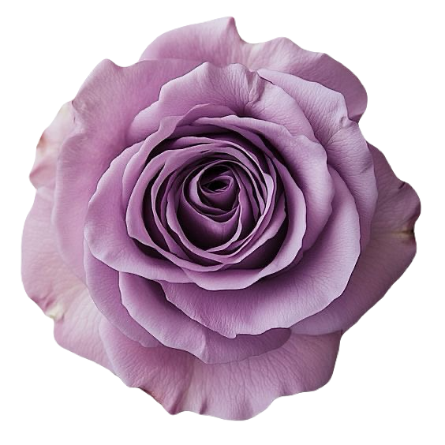

ABOUT ME


“自分の思い描くデザインを実物にする”
専門学校に入学する前に、私の中で一番煌めいたデザインの魅力。たくさんの人の思い描くデザインをより魅力的に実現できるクリエーターになるべく勉強中。
SKILLS
Desin
バナーやチラシなどのグラフィックデザインから、
Webデザインまでを制作することができます。
こんなイメージ、こうしたいを実現するお手伝いします。
Webデザインまでを制作することができます。
こんなイメージ、こうしたいを実現するお手伝いします。
Illustrator
Photoshop
figma
Coding
HTMLやCSSを用いて、Webサイトを制作します。
JavaScriptを使用し、サイトに動きを与えます。
初見で違和感が生まれないよう、心がけています。
JavaScriptを使用し、サイトに動きを与えます。
初見で違和感が生まれないよう、心がけています。
HTML
CSS
JavaScript
STRENGTHS
01.コミュニケーション
デザインは一人で作るものではないと思っています。
環境、音、視覚、言葉などキッカケがあってデザインが生まれる。
その人が感じたことを会話で受け取り、制作するようにしています。
環境、音、視覚、言葉などキッカケがあってデザインが生まれる。
その人が感じたことを会話で受け取り、制作するようにしています。
02.探究心
流行が光の速さみたいに、変わる世の中。
デザインも同じで、時代に合わせて変化していく時代なので、
常にデザインに目を向けて、イマドキを取り入れられるよう研究しています。
デザインも同じで、時代に合わせて変化していく時代なので、
常にデザインに目を向けて、イマドキを取り入れられるよう研究しています。
03.対応力
新たなデザインを見ると、「やっぱりここも直したい」「このページに遷移する時動きをつけたい」など
様々なご要望に応えられるよう努めています。
「こんな感じ流行ってなかった、、？」をパッと提案できるようにしています。
様々なご要望に応えられるよう努めています。
「こんな感じ流行ってなかった、、？」をパッと提案できるようにしています。

BIOGRAPHY
2001.
2001年5月に山形県で生まれ、新潟県で育ちました。
目立つことが好きだったようで、親の喜ぶ顔を見るのが嬉しかったのかもしれません。
武勇伝は、レストランで自分の名前を大声で叫んでから椅子からジャンプしたこと。（3歳頃）
目立つことが好きだったようで、親の喜ぶ顔を見るのが嬉しかったのかもしれません。
武勇伝は、レストランで自分の名前を大声で叫んでから椅子からジャンプしたこと。（3歳頃）
2019.
高校3年生の時に、入学した専門学校と出会いました。
オープンキャンパスで、自分の思い描いたデザインを表現できる楽しさに魅了され、この世界へ。
オープンキャンパスで、自分の思い描いたデザインを表現できる楽しさに魅了され、この世界へ。
2020.
専門学校のクライアント案件で、初めて自分のデザインが起用。
コンペ形式だったため、クライアント側から選んでいただけて嬉しかったです。
実際にHPなどで使用されているのを見た時は、小さな夢が叶った瞬間です。
コンペ形式だったため、クライアント側から選んでいただけて嬉しかったです。
実際にHPなどで使用されているのを見た時は、小さな夢が叶った瞬間です。
2026.
数年デザインの世界から離れていましたが、やはり制作する楽しさは忘れられず、新たに再スタート。
未経験に近いので、初心を忘れずレベルアップを目指して日々励んでいます。
未経験に近いので、初心を忘れずレベルアップを目指して日々励んでいます。